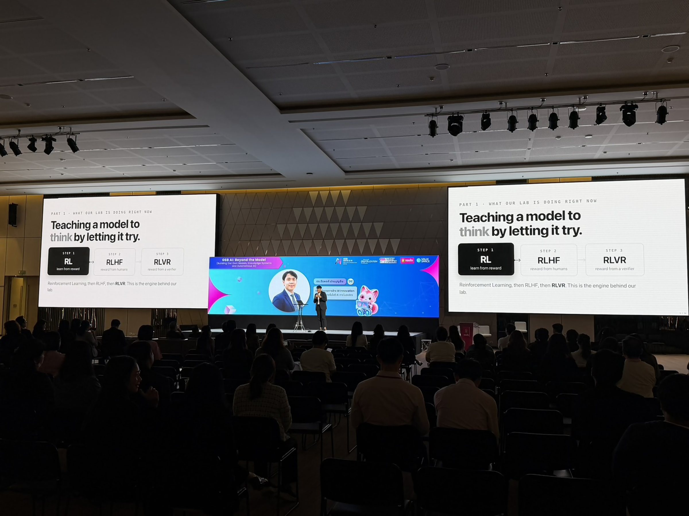
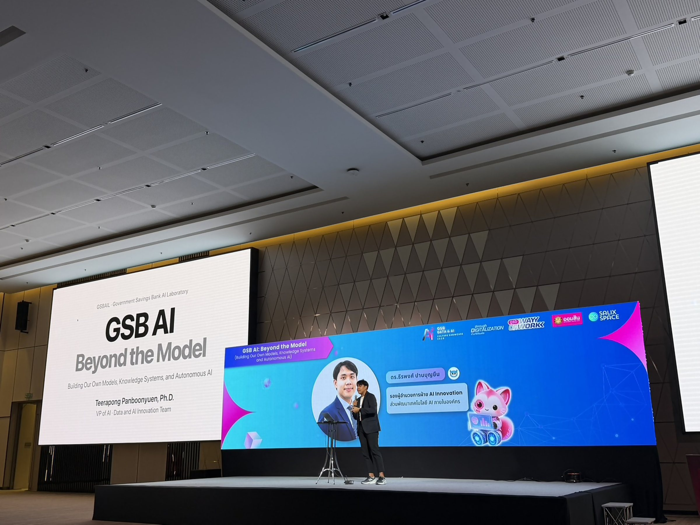
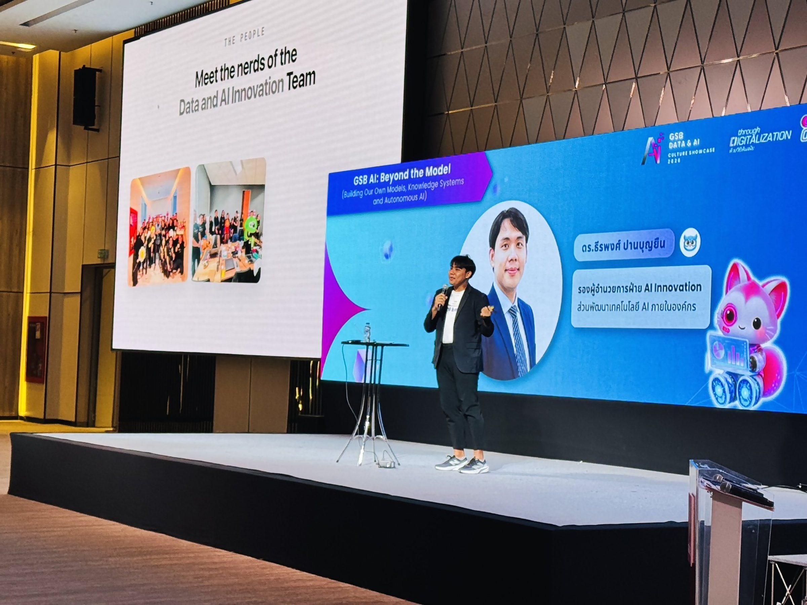
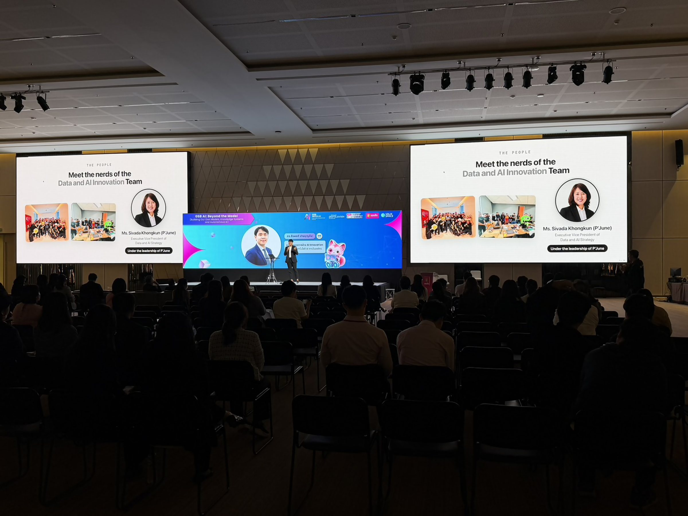
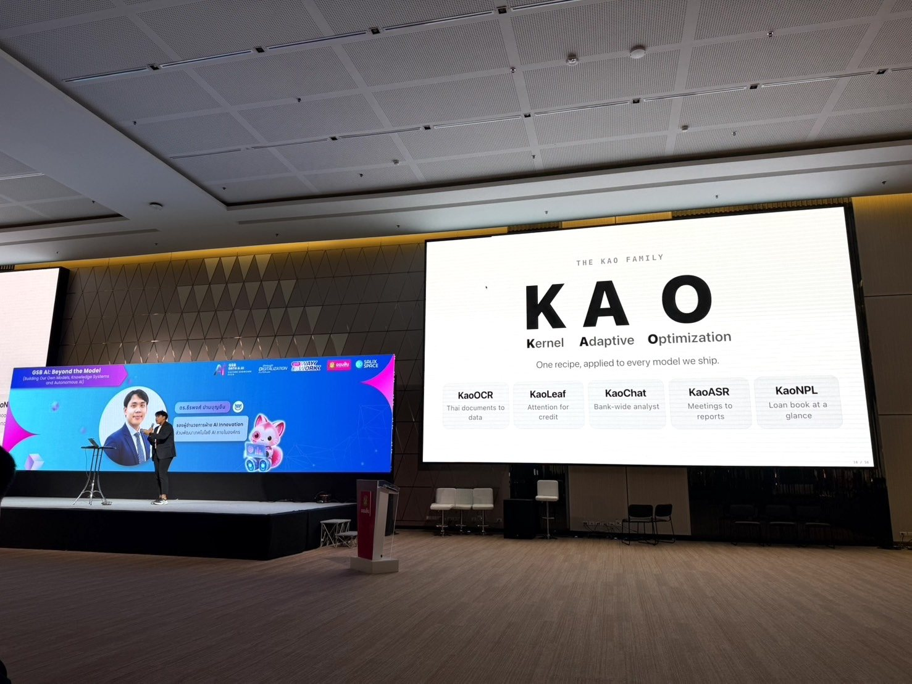
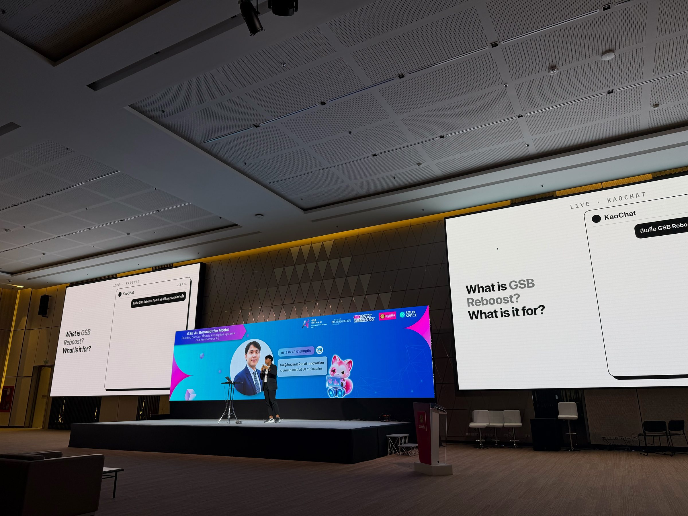
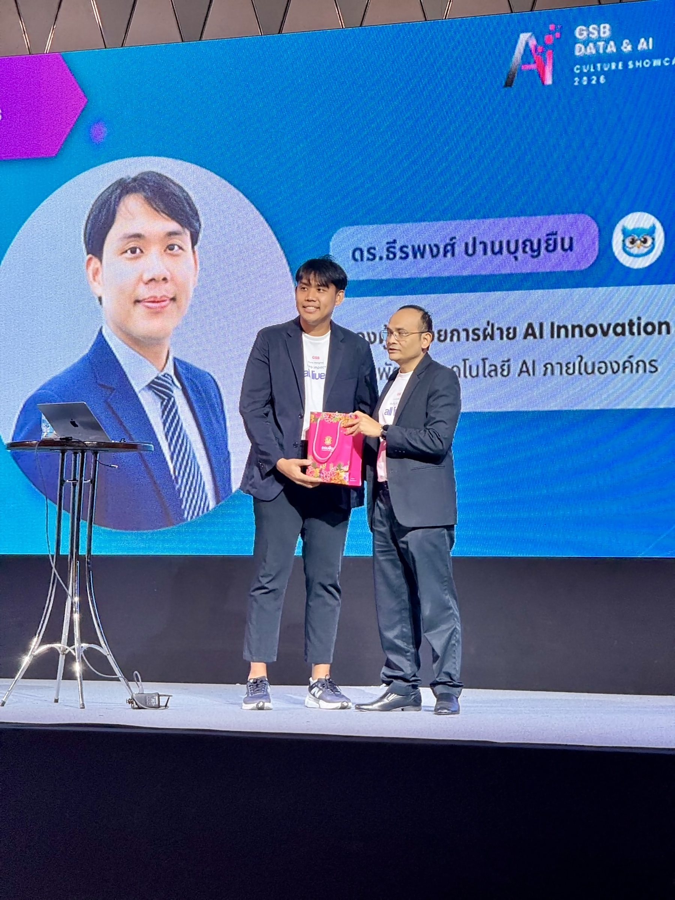
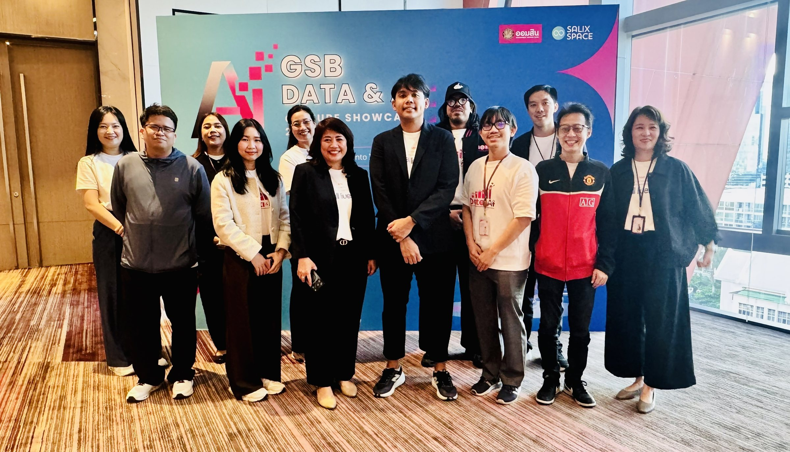
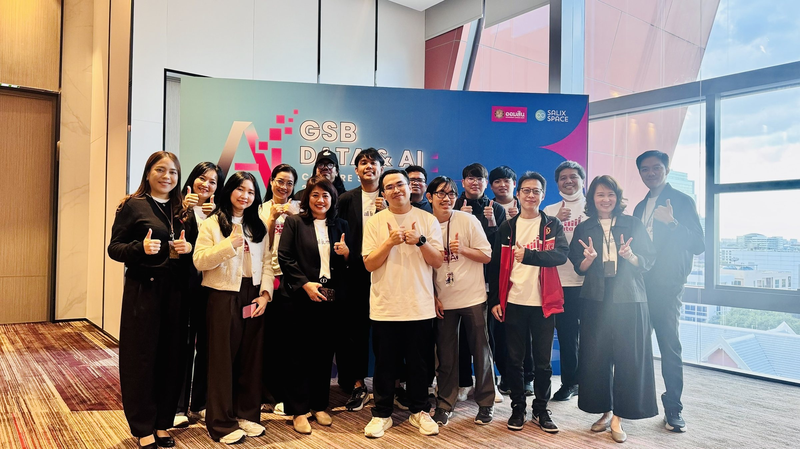

GSB AI: Beyond the Model — One Laboratory, and a Promise to Everyday Thai People
From the first morning on 10 August 2026 to the main stage of the GSB Data & AI Culture Showcase: reinforcement learning, verifiable rewards, the Kao model family, and why a bank that holds people’s lives should keep its AI sovereign, local, and ethical
 Dr. Teerapong Panboonyuen (Dr. Kao), VP of AI at the Government Savings Bank (GSB), presenting ‘GSB AI: Beyond the Model’ at the GSB Data & AI Culture Showcase 2026.
Dr. Teerapong Panboonyuen (Dr. Kao), VP of AI at the Government Savings Bank (GSB), presenting ‘GSB AI: Beyond the Model’ at the GSB Data & AI Culture Showcase 2026.
GSB AI: Beyond the Model
“A bank holds more than money. It holds people’s lives. So the AI that touches those lives should live inside the bank’s own walls.”
Prologue: The Tenth of August
On the tenth of August 2026, I began my work at the Government Savings Bank.
a new door, a steady heart,
a long road begun.
That morning I carried two feelings at once. The first was excitement, the plain and slightly shy kind that a researcher feels when a long-held question finally meets a real place in which it can be asked. The second was humility. The Government Savings Bank is an institution with more than a century of history, trusted by Thai families across generations, and I was the newest person in the building, with a great deal to learn and very little to show.
Three months have passed since then. I have deliberately chosen not to measure them in days, because days are a poor unit for gratitude. I would rather account for them in what they made possible: a laboratory that now has a name, a family of models that now has a shape, a pilot that now has results, and, on the nineteenth of November, a place on the stage of the GSB Data & AI Culture Showcase 2026, where I was given the honor of speaking about a subject I love dearly, namely how a machine can learn to think by being allowed to try.
This post is my attempt to tell that story properly. It is written in two movements. The first is personal: why I came to GSB, what I hoped to contribute, and what these months have taught me. The second is technical: the reinforcement-learning ideas behind our work, the models we have built, and the evidence, with its honest limits, from our first pilot. A reader in a hurry may go straight to the second movement. A reader with a little time may find that the first explains why the second exists at all.
Why I Came Here
Some institutions are measured by their profit. A few are measured by the lives they quietly hold together. When I looked at the Government Savings Bank, I saw the second kind.
I did not come here merely to train larger models. Larger models are being trained in many places, by many capable people, with far more compute than any one of us will ever see. I came because I wanted my work to land somewhere it could matter to ordinary people: the street-side vendor, the small shop owner, the pho-kha mae-kha (พ่อค้าแม่ค้า), the people whose whole livelihood may depend on a modest amount of working capital arriving at the right moment. For them, access to funding is rarely an abstract financial concept. It is the difference between a shutter that rolls up tomorrow morning and one that does not.
That is what the words Social Bank mean to me. The Government Savings Bank does not exist only to lend. It exists to give people who are easily overlooked a fair chance to keep their work alive, to keep going, and, in the plainest sense of the word, to keep breathing. And I came to believe that artificial intelligence, built with care and kept under the bank’s own governance, could help make decisions of this kind faster, fairer, and more transparent.
a pot of broth begins to hum;
the whole of someone's world, alive
on forty baht and what may come.
No ledger counts the hour she rose,
no column prices what she bears;
yet every row, as the data goes,
is someone's morning, someone's prayers.
So teach the machine to be slow where it must,
and quick where a person is waiting in line;
to be fair in the way that a promise is just,
and plain as the daylight, and honest, and kind.
I am a researcher by habit, so I want to give that belief an intellectual footing rather than leave it as a sentiment.
Economics has understood the difficulty for a long time. In their classic study of credit rationing, Stiglitz and Weiss (1981) showed that when a lender cannot observe how risky a borrower truly is, it may rationally refuse credit to some applicants who would have repaid, simply because it cannot tell them apart from those who would not. The people who pay the highest price for this information gap are the ones with thin records: borrowers without collateral, without formal accounts, without a paper trail that a traditional scorecard knows how to read. A vendor who has sold faithfully for many years, but whose sales live inside a mobile banking app, can be invisible to a process that only looks at what it was designed to see.
Modern machine learning offers a partial remedy. Khandani, Kim, and Lo (2010) showed that machine-learning models applied to consumer banking data can forecast credit delinquencies better than conventional approaches, and Björkegren and Grissen (2020) showed that behavioral traces, in their case patterns of mobile-phone usage, can predict repayment for borrowers who have no formal credit history at all. The shared lesson is that evidence of reliability often already exists in the daily rhythm of a person’s economic life. The task is to read it faithfully. In our own pilot, described below, that evidence is a merchant’s own bank statements.
The same literature, however, carries a warning that I take just as seriously. Barocas and Selbst (2016) explain how data-driven decision systems can reproduce disadvantage even when nobody intends to discriminate, and Rudin (2019) argues that for high-stakes decisions we should prefer models whose reasoning can be inspected over black boxes that are explained after the fact. A bank that serves vulnerable people cannot treat accuracy as its only virtue. It must also be able to explain, to audit, and to correct itself. That is why, throughout this post, three words will return like a refrain: verifiable, local, and accountable.
What the First Three Months Were Made Of
I will not pretend that these months were effortless, and I will certainly not pretend that I traveled them alone.
I worked as hard as I knew how. Many evenings went to tuning, testing, breaking, and rebuilding. A great many more went to the quieter labor of learning the bank itself: its language, its regulations, its sense of duty toward the people it serves. A newcomer who is trusted with responsibility incurs a debt, and the only honest way I know to repay a debt of trust is through effort, and through results that other people can check.
None of it would have been possible without the confidence of P’June (Ms. Sivada Khongkun, Executive Vice President of Data and AI Strategy), who backed the idea that a savings bank could build its own AI laboratory, nor without the colleagues of the Data and AI Innovation Team, who shared their time, their knowledge, and their patience with a new colleague who asked a great many questions.
Out of that shared effort came GSBAIL, the Government Savings Bank Artificial Intelligence Laboratory: a research laboratory for deep AI, created to serve the bank and, through the bank, everyday Thai people. Its first work spans language, documents, speech, and credit scoring, and every part of it is designed so that the data stays inside infrastructure that the bank itself controls.
I want to be careful about how I describe this. In machine learning we save a checkpoint not because training has finished, but because the work so far is worth keeping and building upon. That is how I think of this post, and of these three months: a checkpoint, saved with gratitude, from a run that is still going.
slow, and then slower, down the screen;
each epoch is a small refrain
for things we hope, and things we mean.
No headline marks the quiet hour
a checksum finally balances;
but somewhere, in that small, true power,
a stranger gets a fairer chance.
If there is one promise I would like to make in these pages, it is this: I will keep working, with diligence and with humility, to develop local AI that is both capable and ethical, so that the Government Savings Bank can continue to help the grassroots people of Thailand for many years to come.
Interlude: The Day on Stage
On 19 November 2026, I stood before a room of bankers and talked about reinforcement learning. At a savings bank, with a slide that read “Teaching a model to think by letting it try.” I am grateful to everyone in that room for their generous attention.

Figure 1: The moment reinforcement learning reached the big screens of the GSB Data & AI Culture Showcase 2026. The slide reads "Teaching a model to think by letting it try," with three steps laid out from left to right: RL (learn from reward), RLHF (reward from humans), and RLVR (reward from a verifier). That three-step ladder is the engine behind much of what our laboratory is building, and it is the thread I will follow through the rest of this post.
In Brief
- I am building GSBAIL, the Government Savings Bank AI Laboratory, a research lab for deep AI that serves the bank and, through the bank, everyday Thai people.
- Everything is designed as sovereign AI / local AI: models we research, train, and run on infrastructure the bank controls.
- The engine is RL → RLHF → RLVR, and the mathematics is explained below.
- The Kao model family: KaoOCR, KaoLEAF, KaoChat, KaoASR, KaoNPL.
- The pilot: QR Maha Heng × Nokkrasip, merchant loans scored by our own models, with 0 bytes leaving the bank.
- None of it would exist without P’June and the Data and AI Innovation Team.
The Talk: “GSB AI: Beyond the Model”

Figure 2: The title slide: "GSB AI: Beyond the Model: Building Our Own Models, Knowledge Systems, and Autonomous AI." The slide carries the laboratory's name, GSBAIL, in small print above the title, and "VP of AI · Data and AI Innovation Team" below it. Seeing "GSBAIL" on a screen that large was a strange and wonderful feeling. Three months earlier, that name did not exist.
My talk opened with a question that I suspect many people in that room were quietly asking:
Is a savings bank supposed to build its own AI?
Thailand’s national savings bank is trusted across generations. It is not the first name one would guess for frontier research. The honest answer to the question is the whole purpose of the laboratory: let us see how far we can responsibly go.
What Is GSBAIL?
GSBAIL = Government Savings Bank Artificial Intelligence Laboratory.
We research and build four families of capability, with every byte inside infrastructure the bank controls:
| # | Capability | What it means |
|---|---|---|
| 01 | Language | LLMs and knowledge systems |
| 02 | Documents | Vision-language OCR |
| 03 | Speech | Thai ASR and summarization |
| 04 | Scoring | Attention models for credit |
Sovereign AI in One Equation
Sovereign AI can sound like a slogan until it is written as an optimization problem:
The objective is where we are free to be creative. The constraint is not negotiable.
There are sound scientific reasons for treating the constraint so strictly. Foundation models concentrate both capability and risk in a few places (Bommasani et al., 2021), and large language models are known to memorize and, under some conditions, reveal fragments of their training data (Carlini et al., 2021). For a bank, whose data is a record of people’s lives, the safest place for sensitive text to go is nowhere. There is also a practical, local reason: Thai is a language in which open models have historically been less well served than English, which is why community efforts such as Typhoon (Pipatanakul et al., 2023) matter, and why a bank with its own Thai documents and its own regulations has something genuinely worth training on.
Most of the interesting engineering in a regulated environment lives in that small phrase, “subject to.”
The “Local Everything” Agenda
This is the research agenda the laboratory is built around. The showcase covered the first few items as systems already running; the rest is where we are heading:
- Local LLMs: language models that think, summarize, and reason in Thai and English, on our own GPUs
- Local vision-language models: reading Thai documents without sending a single page anywhere
- Local ASR: Thai speech-to-text and meeting summaries that stay in the building
- Local retrieval: our own embeddings, indexes, and rerankers over the bank’s own regulations
- Local tools and code execution: so the model never does arithmetic that code can do exactly
- Local verifiers: deterministic checkers that turn “is this right?” into a reward signal
- Local evaluation harnesses: honest, repeatable benchmarks on bank-relevant tasks
- Local guardrails and audit trails: because “trust me” is not a compliance strategy
If something can be run locally, researched locally, and governed locally, we would like it to be.
The People Behind the Lab
Before any algorithm, I would like to introduce the people who matter most.

Figure 3: "Meet the nerds of the Data and AI Innovation Team." Yes, the word "nerds" appeared on a main-stage slide, and it was said with affection. The photos show the team doing what we do best: working side by side, laughing a little too loudly, and debating loss curves. Everything presented in this talk carries the fingerprints of every person in those pictures.

Figure 4: "Under the leadership of P'June": Ms. Sivada Khongkun, Executive Vice President of Data and AI Strategy. Thank you, P'June, for believing that a savings bank can build its own AI laboratory. Great research needs great sponsorship, and this laboratory exists because of her leadership.
To P’June and to every colleague in the Data and AI Innovation Team: thank you. You are the reason GSB can have local AI that is both capable and ethical. I promise to keep developing local AI to help the bank as far as my abilities allow.
Part 1: The Engine — RL, RLHF, RLVR
This is the section where the mathematics comes out, and I will try to keep it gentle.
The idea fits in one sentence:
We teach a model to think by letting it try, and then we tell it how well it did.
The only question that changes from step to step is: who gives the reward?
| Step | Name | Who gives the reward? | Best at | Weak at |
|---|---|---|---|---|
| 1 | RL | the environment | games, control, anything with a clean score | needs a reward function |
| 2 | RLHF | humans (via a learned reward model) | style, helpfulness, tone | humans are noisy, slow, expensive |
| 3 | RLVR | a verifier (plain code) | math, code, bank data | needs answers that can be checked |
Let us climb the ladder one rung at a time.
Step 1: Reinforcement Learning — “Act. Get a reward. Repeat.”
Plain-English version. Imagine a dog learning “sit.” The dog (the agent) tries a trick. The owner (the environment) reacts. A treat comes back: +1. Over time the dog adds up every treat it earns, and a treat now is worth a little more than a treat later. So it learns to do whatever earns the most treats.
Technical version. The framework is the Markov decision process, the standard formalism of the field (Sutton & Barto, 2018). At each step $t$ the agent observes a state $s_t$, takes an action $a_t \sim \pi_\theta(\cdot \mid s_t)$, and receives a reward $r_t$ and the next state $s_{t+1}$. The discounted return from time $t$ is:
and the goal is to find the policy that maximizes expected return:
The discount factor $\gamma$ is the mathematical form of “a treat now is worth more than a treat later.” If the treat is two steps away and $\gamma = 0.9$, it is worth $0.9^2 = 0.81$ treats today. (I verified this in code below.)
The value of a state satisfies the Bellman equation:
and the policy gradient theorem, whose simplest practical form is the REINFORCE estimator (Williams, 1992), tells us how to improve the policy directly:
Read it as a sentence: “raise the log-probability of an action in proportion to how much better than expected it turned out.” The baseline $b(s_t)$ does not bias the gradient but reduces its variance, and when $b = V^\pi$ the bracket becomes the advantage $A_t$. Please remember the word advantage. It returns in a few minutes wearing a very different outfit.
Step 2: RLHF — “When ‘good’ is a human opinion.”
Some things have no clean score. What makes a good answer to “Explain a loan in one sentence”?
On my slide, the LLM writes two answers:
- A: a loan is money you borrow today and pay back later, with a small fee.
- B: a legalistic sentence about a “bilateral contract whereby the obligor shall remit principal…”
A person picks the one they prefer: A. A reward model learns to score the winner high ($r = 0.9$) and the loser low ($r = 0.2$). Then the LLM is nudged toward answers that people like. This recipe, learning a reward from human preferences and then optimizing against it, was introduced for deep RL by Christiano et al. (2017) and scaled to instruction-following language models by Ouyang et al. (2022).
The mathematics: Bradley–Terry. We model the probability that humans prefer $y_w$ over $y_l$ as a logistic function of the reward gap (Bradley & Terry, 1952):
and train the reward model by maximum likelihood:
Plugging in the slide’s numbers: the gap is $0.9 - 0.2 = 0.7$, so $\sigma(0.7) \approx 0.668$ and the loss is $-\log(0.668) \approx 0.403$. The gradient with respect to the gap is $-(1 - \sigma(0.7)) \approx -0.332$, which is the mathematical way of saying “push A up, push B down.” Training widens that gap.
Then PPO (Schulman et al., 2017) improves the policy using the learned reward, while a KL penalty keeps it from drifting too far from the reference model:
The clip says: “improve, but do not take a step so large that you forget how to speak.”
A note for the curious. The KL-regularized objective above has a closed-form optimum, $\pi^\star(y \mid x) \propto \pi_{\mathrm{ref}}(y \mid x) \exp(r(x,y)/\beta)$. Rearranging it is exactly how DPO (Rafailov et al., 2023) removes the need for an explicit reward model. That deserves a post of its own.
The catch. A learned reward model is only a proxy for what we actually want. Optimize a proxy hard enough and the policy finds its cracks. This is reward hacking, and it has been studied both empirically, through scaling laws for reward-model overoptimization (Gao et al., 2023), and formally (Amodei et al., 2016; Skalse et al., 2022). It is Goodhart’s law in a GPU costume, in the popular phrasing of Strathern (1997): when a measure becomes a target, it ceases to be a good measure.
For a bank, “a human thought it sounded nice” is not a sufficient standard. Which brings us to the third rung.
Step 3: RLVR — “Replace the human with a verifier.”
Reinforcement Learning with Verifiable Rewards. The term was popularized by the Tülu 3 work (Lambert et al., 2024), and the approach gained wide attention through DeepSeek-R1 (DeepSeek-AI, 2025), which trained reasoning behavior using rule-based rewards. The insight is wonderfully simple:
Banks are full of answers that can be checked.
A statement says the total is 32,293. Do the extracted rows actually sum to 32,293? That is not an opinion. That is arithmetic. A verifier, plain deterministic code, can check it:
Right answer: reward 1. Wrong answer: reward 0. No human involved, and no reward model to hack.
The loop (this is the animation I had on the slide):
- Ask the model the same question 8 times ($G = 8$). Eight different answers come back.
- A verifier checks each one against the statement. Suppose 4 pass and 4 fail, so the rewards are $(1,0,1,0,0,1,1,0)$.
- Compare each answer with its own group. The mean reward is $0.5$ and the standard deviation is $0.5$.
- Better than the group? +1. Worse? −1. Make the winners more likely next time.
That “compare with the group” step is GRPO, Group Relative Policy Optimization (Shao et al., 2024). Remember the advantage from RL? Here is its new outfit:
and the objective is a PPO-style clipped surrogate averaged over the group (simplified here to the sequence level, with $\rho_i = \pi_\theta(y_i \mid x)/\pi_{\theta_{\text{old}}}(y_i \mid x)$):
What I appreciate about this design:
- No reward model. The verifier is code.
- No labelers. No human is needed in the loop for the reward.
- No critic or value network. The group is the baseline, which saves a whole network’s worth of memory.
And a few caveats, because honest research should list them:
- Zero-signal groups. If all 8 answers are right (or all wrong), then $\operatorname{std} = 0$ and every advantage collapses to 0. No learning happens. In practice we need prompts that are neither trivial nor impossible.
- Normalization quirks. Follow-up analysis (Liu et al., 2025) has examined difficulty and length biases that arise from the standard-deviation and length normalization in GRPO. Another rabbit hole, and another post.
- Reward design still matters, even with a verifier. Which leads to the next section.
RLVR on Bank Data
Why am I so enthusiastic about this for a bank? Because our world is full of verifiable structure:
| Model | The question a verifier can ask |
|---|---|
| KaoOCR | Does $\sum \text{extracted} = \sum \text{declared}$ on the statement? |
| KaoChat (GSB) | Does the cited document and page actually contain the claim? |
| KaoChat (analyst) | Does the query result equal the ground-truth table? |
A reward shape that captures the first row (shown on the slide as illustrative):
Look carefully at the product. Correctness is a gate, not a bonus. A beautifully formatted, perfectly cited, wrong answer receives exactly zero. That is deliberate: it removes the cheap exploit of polishing the packaging while ignoring the content. The reward is verifiable, deterministic, and auditable, three words that a risk committee is glad to hear.
From Equations to Code: The RL Zoo
Because I trust nothing that I have not run, here is the small pure-NumPy script behind the numbers above (the dog, the reward model, and the GRPO group). It uses no bank data and no GPU. It is illustrative only, but it runs anywhere:
"""
GSBAIL RL Zoo — three tiny, runnable demos behind the talk
==========================================================
1. RL : discounted return (the dog and the treats)
2. RLHF : Bradley-Terry preference loss (the reward model)
3. RLVR : verifiable reward + group-relative advantage (GRPO-style)
Pure NumPy, CPU only. No bank data. Illustrative only.
"""
import numpy as np
def sigmoid(x):
return 1.0 / (1.0 + np.exp(-x))
def log_sigmoid(x):
# numerically stable log(sigmoid(x))
return -np.logaddexp(0.0, -x)
# ---------------------------------------------------------------------------
# 1. RL — discounted return G_t = sum_k gamma^k r_{t+k}
# ---------------------------------------------------------------------------
def discounted_return(rewards, gamma=0.9):
g = 0.0
for r in reversed(rewards): # G_t = r_t + gamma * G_{t+1}
g = r + gamma * g
return g
# ---------------------------------------------------------------------------
# 2. RLHF — Bradley-Terry: L = -log sigmoid( r(x,y_w) - r(x,y_l) )
# ---------------------------------------------------------------------------
def bradley_terry_loss(r_win, r_lose):
return float(-np.mean(log_sigmoid(np.asarray(r_win) - np.asarray(r_lose))))
# ---------------------------------------------------------------------------
# 3. RLVR — the verifier is plain, deterministic code
# ---------------------------------------------------------------------------
def verifier_reward(extracted_rows, declared_total, cite_valid, format_ok):
"""
r(y) = 1[ sum(rows) == declared ] * (0.5 + 0.3*1[cite] + 0.2*1[format])
Correctness GATES everything: a beautifully formatted wrong answer = 0.
"""
exact = abs(sum(extracted_rows) - declared_total) < 1e-6
return float(exact) * (0.5 + 0.3 * cite_valid + 0.2 * format_ok)
def group_advantages(rewards, eps=1e-6):
"""A_i = (r_i - mean(r)) / (std(r) + eps) — no critic, no value network."""
r = np.asarray(rewards, dtype=np.float64)
return (r - r.mean()) / (r.std() + eps) # population std
def grpo_surrogate(logp_new, logp_old, adv, clip_eps=0.2):
"""PPO-style clipped surrogate, with group-relative advantages."""
ratio = np.exp(np.asarray(logp_new) - np.asarray(logp_old))
unclipped = ratio * adv
clipped = np.clip(ratio, 1 - clip_eps, 1 + clip_eps) * adv
return float(-np.mean(np.minimum(unclipped, clipped)))
if __name__ == "__main__":
print("== 1. RL: a treat now beats a treat later ==")
print(" G_0 for rewards [0, 0, 1], gamma=0.9 :", round(discounted_return([0, 0, 1]), 4))
print("\n== 2. RLHF: Bradley-Terry ==")
r_win, r_lose = 0.9, 0.2
gap = r_win - r_lose
p = float(sigmoid(gap))
print(f" reward gap : {gap:.2f}")
print(f" P(A preferred over B) : {p:.4f}")
print(f" loss = -log sigmoid(gap) : {bradley_terry_loss(r_win, r_lose):.4f}")
print(f" dL/dgap = -(1 - sigmoid) : {-(1 - p):.4f} (push A up, push B down)")
print("\n== 3. RLVR: G = 8 samples, 4 pass the verifier ==")
rewards = [1, 0, 1, 0, 0, 1, 1, 0]
adv = group_advantages(rewards)
print(" rewards :", rewards)
print(" mean, std :", np.mean(rewards), np.std(rewards))
print(" advantages :", [round(float(a), 3) for a in adv])
print("\n Degenerate groups carry no signal (std = 0):")
print(" all correct:", np.round(group_advantages([1] * 8)[:3], 3), "...")
print(" all wrong :", np.round(group_advantages([0] * 8)[:3], 3), "...")
print("\n Reward shaping (illustrative):")
rows, total = [10.0, 20.0, 30.0], 60.0
print(" exact + cite + format :", verifier_reward(rows, total, 1, 1))
print(" exact, no cite :", verifier_reward(rows, total, 0, 1))
print(" WRONG but pretty :", verifier_reward([10.0, 20.0, 31.0], total, 1, 1))
print("\n One clipped surrogate step:")
logp_old = np.zeros(8)
logp_new = np.array([0.30, -0.25, 0.10, -0.05, 0.0, 0.40, -0.10, -0.30])
print(" surrogate loss:", round(grpo_surrogate(logp_new, logp_old, adv), 4))
Expected output:
== 1. RL: a treat now beats a treat later ==
G_0 for rewards [0, 0, 1], gamma=0.9 : 0.81
== 2. RLHF: Bradley-Terry ==
reward gap : 0.70
P(A preferred over B) : 0.6682
loss = -log sigmoid(gap) : 0.4032
dL/dgap = -(1 - sigmoid) : -0.3318 (push A up, push B down)
== 3. RLVR: G = 8 samples, 4 pass the verifier ==
rewards : [1, 0, 1, 0, 0, 1, 1, 0]
mean, std : 0.5 0.5
advantages : [1.0, -1.0, 1.0, -1.0, -1.0, 1.0, 1.0, -1.0]
...
WRONG but pretty : 0.0
The Kao Family
Now that the engine is on the table, what do we actually build?

Figure 5: The KAO family: Kernel · Adaptive · Optimization. "One recipe, applied to every model we ship." Five models sit under the banner: KaoOCR (Thai documents to data), KaoLeaf (attention for credit), KaoChat (bank-wide analyst), KaoASR (meetings to reports), and KaoNPL (loan book at a glance). KAO is also my own nickname. I noticed this too, and I have decided to leave it as it is.
| Model | One-liner | What it does |
|---|---|---|
| KaoOCR | Thai documents to data | A vision-language model that reads Thai bank statements and app captures into clean, structured data |
| KaoLEAF | Attention for credit | An attention model that turns those numbers into a score and a credit limit |
| KaoChat | Bank-wide analyst | Answers staff questions with file and page citations, and also analyzes data |
| KaoASR | Meetings to reports | Thai speech-to-text with summaries and formal reports |
| KaoNPL | Loan book at a glance | A warehouse-style dashboard tracking the loan portfolio, days-past-due (DPD) buckets, and NPL flow |
The recipe behind “Kernel Adaptive Optimization” deserves a post of its own. For now, let us look at two of these models in the field.
Part 2: GSB × Nokkrasip — QR Maha Heng
This is the part of the talk where the mission and the mathematics finally meet.
Savings Bank QR Maha Heng × Nokkrasip is a pilot for merchant loans, scored by KaoOCR and KaoLEAF, in a pipeline that runs entirely on our own local AI.
The Hard Part
We cannot reach the merchant’s source app. A shop’s daily sales live in another bank’s app. So the shop owner downloads four months of statements and uploads them to us.
Which raises the question that kept me awake:
How do we know nobody edited them on the way?
One case is four monthly statements, and a single statement can run past 100 pages. Hundreds of rows. A human reviewer cannot be expected to examine every one.
The Answer: Never Trust, Always Verify
The decision path for every case looks like this:
4 monthly statements + 1 storefront capture
│
▼
┌───────────────────────┐
│ KaoOCR (13–31 s) │ Thai PDFs → structured rows
└───────────┬───────────┘
▼
Gate 1 Documents declared totals == extracted totals ?
Gate 2 Identity shop name in statement == shop name in app capture ?
Gate 3 Forensics does the PDF's file fingerprint look genuine ?
Gate 4 Prescreen is average monthly sales above the floor ?
Gate 5 KaoLEAF score + credit limit
▼
Verdict
Gate 1 is an accounting identity. For each monthly statement $m$ with $n_m$ rows of amounts $a_{m,i}$ and a printed total $T_m$:
A single misread digit shifts the sum, so the identity breaks. Only a coordinated set of errors could cancel out. It is a checksum for money, and it is exactly the verifier from the RLVR section: the same idea doing a different job.
Gate 3 is my favorite party trick: every PDF has a fingerprint. A genuine export from the source app carries a specific producer string in its metadata (in our pilot, iText 2.1.7), and its declared totals match the extracted totals. The fraudulent case in the pilot? Its producer read Microsoft Excel 2024: a spreadsheet, printed to PDF. A hand-built statement, not an export.
A two-line sketch of the idea:
from pypdf import PdfReader
producer = PdfReader("statement.pdf").metadata.producer # e.g. 'iText 2.1.7 by 1T3XT'
A note on honesty. Metadata can be spoofed, so a fingerprint is one signal, never a verdict. That is exactly why it sits next to the totals check and the identity cross-check. Defense in depth beats a clever trick, every time.
KaoOCR — “The Eyes”
KaoOCR is a 27B vision-language model that reads Thai bank statements and app captures. On our “budget set” it scores 95.6%, compared with 81.0% for Gemini 2.5 Flash. Converted into error rates, the comparison becomes sharper:
When the cost of one wrong digit is a wrong credit decision about a real person’s livelihood, “4.3× fewer errors” is not a vanity metric.
KaoLEAF — “The Judgment”
Once the numbers are clean and trusted, KaoLEAF turns them into a score and a credit limit. It is an attention model, built on the same core operation that powers every modern transformer (Vaswani et al., 2017):
Intuitively, attention lets each signal in a merchant’s history (average monthly sales, median, minimum, and a stability measure such as the coefficient of variation $\mathrm{CV} = \sigma/\mu$) look at the others before deciding what matters. A shop with high average sales but wild swings tells a different story from a modest shop that sells steadily every single week.
On a realistic loan dataset, KaoLEAF reached AUC 0.9852, first place among 11 models. A short translation, because AUC has a lovely probabilistic meaning (Hanley & McNeil, 1982):
Pick one good borrower and one bad borrower at random: the model ranks the good one higher about 98.5% of the time. Credit-risk practitioners also like the Gini coefficient, $\text{Gini} = 2\text{AUC} - 1 \approx 0.970$.
Six Real Cases, Six Stories
The pilot ran on six real merchant cases (identities removed), each with 4 statements and 1 storefront capture:
| Case | Outcome | What happened |
|---|---|---|
| 01 | Approve | All gates green: totals match, identity matches, genuine file, score approves |
| 02 | Approve | The same: every gate green |
| 03 | Reject | Documents were clean, but the prescreen on average sales did not pass |
| 04 | Reject | The same pattern: honest files, but capacity did not meet the prescreen |
| 05 | Fraud flagged | File fingerprint said Microsoft Excel 2024, and the source app did not match |
| 06 | Misunderstanding found | The capture was a storefront without the app screen: a warning, not an accusation |
I want to dwell on cases 03 and 04 for a moment. Those are the “no” answers, and they are the ones my mind keeps returning to. A rejection is not a verdict on a person. It is a statement about capacity at this moment. The long-term research question I care about is how a “no” can come with a “here is what would change it.” That is a research direction, not a product commitment.
The Scoreboard
2 approved, 2 rejected, 1 fraud caught, 1 misunderstanding found. And 0 bytes left the bank.
A word on statistical honesty. A pilot of six cases shows that the pipeline works end to end; it does not prove “100% in the wild.” If extraction is counted per statement (24 of 24 correct, which is my own assumption about how to count), the lower end of the exact Clopper–Pearson 95% confidence interval (Clopper & Pearson, 1934) for the true accuracy is $0.025^{1/24}$, which is roughly 85.8 percent. For fraud we have exactly one positive example, which is a story and not a statistic. Evaluation at scale is what comes next, and I would rather say so plainly than let a perfect score in a small sample speak for more than it can.
Part 3: KaoChat — “Ask the Bank. Get the Page Number.”

Figure 6: The live KaoChat demo on the big screens: "What is GSB Reboost? What is it for?" A live demonstration is among the most nerve-racking things a researcher can do, because the model is free to misbehave in front of an entire room. What you see is a real back-end running locally, with a Thai question going in and a cited Thai answer coming out.
KaoChat answers staff questions in plain Thai, and every answer comes with the file name and the page number. The pipeline on the slide lights up one box at a time:
Question (plain Thai) → Retrieve (7 sources found) → LLM plans (text or tool?)
→ Code computes (exact numbers) → Answer + cite (file · page)
What the Retrieval Step Really Does
The textbook description of retrieval-augmented generation (Lewis et al., 2020) is to marginalize over the retrieved documents:
In plain words: find the pages most relevant to the question, then answer using them, and show your sources. The part that makes it bank-grade is the second half: if the cited document and page do not actually contain the claim, that is a failure, which is precisely a verifier-shaped question for RLVR.
Live Demo 1: “Can anyone apply for GSB Reboost?”
KaoChat answered, roughly: No. The loan is not open to the general public. It is available only to target customers the bank selects under defined conditions. It cited the Q&A document, page 1, with a download link, in about 9.0 seconds, with a gentle reminder to confirm with the bank before making decisions.
Live Demo 2: “What is GSB Reboost? What is it for?”
KaoChat explained that GSB Reboost (under the People’s Bank initiative) is a social loan program designed to help customers who do not pass the bank’s normal credit criteria but are selected by the bank, with the goal of improving their liquidity for day-to-day living. It cited three sources in about 9.9 seconds.
This answer touched me personally, because it is the whole mission in one paragraph: a loan product built for people the regular rules would turn away. An AI that helps our staff explain it correctly, instantly, and with a page number, is a small piece of plumbing in something that truly matters.
Beyond the Chatbot: KaoChat Is Also a Data Analyst
Ask it for the top 10 branches by Reboost disbursement, and something more interesting happens:
LLM plans (aggregate · top 10) → Code runs (sort · max · min · avg) → LLM explains (Thai answer)
The slide’s tagline is my favorite sentence of the entire talk:
The model never does the arithmetic. The harness does.
Language models are wonderful at deciding what to compute and explaining what it means. They are unreliable at multiplying seven-digit numbers in their heads. So we give them a calculator and a rule: numbers in the answer must come from code, not from token prediction. The result on the slide was labeled, with pride, as computed by a program and not by a language model (data as of 5 November 2026).
Live Demo 3: “Which regulation? Which page? Instantly.”
Asked whether the cost of prosthetics and therapeutic devices (including repairs) is reimbursable, KaoChat answered yes, at the types and rates set by the Ministry of Finance, citing four GSB regulations (Nos. 762, 741, 740, and 525) down to the pages. Instead of opening four PDFs and hunting for the right page, the answer arrived in under 10 seconds (9.9 s on the slide).
Why Local Matters: “New Rule Today. Answer Today.”
Because the AI is ours, we can update the bank’s knowledge whenever we need to:
New PDF (regulation lands) → Parse (KaoOCR reads it) → Index (pages + dates) → Live (KaoChat cites it)
No vendor. No waiting. No data leaving the building. A new regulation can be answerable on the same day it is published. That sentence alone justified the laboratory for me.
Two Quick Cameos
- KaoASR turns Thai meetings into text, summaries, and formal reports, supporting long recordings and common audio and video formats.
- KaoNPL-Warehouse gives a bird’s-eye view of the loan book: portfolio composition, DPD buckets, and NPL flow over time. It is the loan book at a glance.
Each deserves a full write-up. Consider this the post-credits scene.
The Ethics Slide I Would Not Skip
Near the end of the talk I slowed down and said something that was not about models at all.
Today, many of us build with Copilot, Claude, Gemini, and ChatGPT. They make our work easier, and I say that sincerely. But a bank holds more than money:
A bank holds people’s lives.
And every prompt is a trust decision:
- Who sees it?
- Who keeps it?
- Who learns from it?
So we are building toward 100% control and 0 bytes leaving the bank. The research question for the laboratory is simple to state and hard to answer:
What can replace the frontier tier, inside our walls?
Researched by our laboratory. Run on our infrastructure. Governed by our bank.
Five Lessons from Three Months
If I had to compress these months into a model card:
- Verifiers beat vibes. Wherever an answer can be checked by code, check it, and let that check become the reward.
- Never let the model do arithmetic that code can do exactly. Let language models plan and explain; let programs compute.
- Cite everything. An answer without a page number is a rumor with good grammar.
- Local is a feature, not a limitation. Same-day updates, zero egress, and auditability are capabilities, not compromises.
- The data is people. Every row in every statement is somebody’s Tuesday. Build accordingly.
A Gift, and a Moment of Gratitude

Figure 7: Receiving a kind gift on stage after the session. I smiled the smile of someone who had spent many evenings tuning slide animations, which is accurate. Standing under my own name on that giant screen, three months after first walking through the door, was one of the most moving moments of my career so far.
Thank You

Figure 8: The team, in front of the GSB Data & AI Culture Showcase backdrop. Colleagues and friends: the people behind every Kao-something on the screen. AI systems are never built by one person. I happened to be the one holding the microphone, not the one doing all the work.

Figure 9: Thumbs up, peace signs, and tired smiles: the best possible output of a very long pipeline. If you want to know what the Data and AI Innovation Team looks like, it looks like this: people who care deeply, laugh often, and deliver anyway.
I would like to thank, from the bottom of my heart:
- P’June, for leadership, trust, and a mission that makes the whole effort worthwhile
- Every colleague in the Data and AI Innovation Team. Every one of you shaped what I showed on that stage. You are the reason GSB can have local AI that is capable and ethical.
- The organizers of the GSB Data & AI Culture Showcase 2026, for the stage
- Everyone who sat in the audience and listened patiently to a newcomer speak about reinforcement learning at a savings bank
I am genuinely grateful to have chosen to work here, and I promise to keep developing local AI that helps the bank as much as I possibly can.
This Is Only the Beginning
Everything I presented was the result of about three months of work, and I regard it as the first page of a long book rather than the last.
It is the first step of GSBAIL, the Government Savings Bank AI Laboratory: a laboratory for deep AI research, built to support our own bank and, through it, to help grassroots Thais live a little better, in the spirit of the Social Bank that the Government Savings Bank has always stood for.
The vendor who needs a small loan to keep her stall open. The shop owner whose whole life is summarized in a monthly statement. The person who has been told “no” by every system before this one.
Those are the people I think about when I write a loss function.
Beyond the glass, a vendor lights her stove;
a clerk explains a rule to someone new;
and all our work has only this to prove:
that trust can live inside a line of code,
and still belong to those who walked the road.
The model is not the end. Beyond the model is where the people are.
Let us keep going.
Glossary for the Gentle Reader
| Term | Plain meaning |
|---|---|
| RL | Learn by trying, getting a reward, and repeating |
| RLHF | RL where the reward comes from human preferences (via a reward model) |
| RLVR | RL where the reward comes from a verifier, i.e., checkable code |
| PPO | A stable RL algorithm that limits how far each update can move the policy |
| GRPO | PPO-style training where each answer is scored relative to its own sampled group |
| KL divergence | A measure of how far one model’s behavior has drifted from another’s |
| VLM | Vision-language model: reads images and text |
| OCR | Optical character recognition: turning images of text into text |
| RAG | Retrieval-augmented generation: look things up, then answer with citations |
| ASR | Automatic speech recognition: speech to text |
| AUC | Probability that a model ranks a random good case above a random bad case |
| DPD / NPL | Days past due / non-performing loan |
| Sovereign AI | AI whose models, data, and governance stay under your own control |
Selected References
- Amodei, D., Olah, C., Steinhardt, J., Christiano, P., Schulman, J., & Mané, D. (2016). Concrete Problems in AI Safety. arXiv:1606.06565.
- Barocas, S., & Selbst, A. D. (2016). Big Data’s Disparate Impact. California Law Review, 104(3), 671–732.
- Björkegren, D., & Grissen, D. (2020). Behavior Revealed in Mobile Phone Usage Predicts Credit Repayment. The World Bank Economic Review, 34(3), 618–634.
- Bommasani, R., et al. (2021). On the Opportunities and Risks of Foundation Models. arXiv:2108.07258.
- Bradley, R. A., & Terry, M. E. (1952). Rank Analysis of Incomplete Block Designs: I. The Method of Paired Comparisons. Biometrika, 39(3/4), 324–345.
- Carlini, N., et al. (2021). Extracting Training Data from Large Language Models. USENIX Security Symposium. arXiv:2012.07805.
- Christiano, P., Leike, J., Brown, T., Martic, M., Legg, S., & Amodei, D. (2017). Deep Reinforcement Learning from Human Preferences. Advances in Neural Information Processing Systems (NeurIPS), 30.
- Clopper, C. J., & Pearson, E. S. (1934). The Use of Confidence or Fiducial Limits Illustrated in the Case of the Binomial. Biometrika, 26(4), 404–413.
- DeepSeek-AI. (2025). DeepSeek-R1: Incentivizing Reasoning Capability in LLMs via Reinforcement Learning. arXiv:2501.12948.
- Gao, L., Schulman, J., & Hilton, J. (2023). Scaling Laws for Reward Model Overoptimization. International Conference on Machine Learning (ICML). arXiv:2210.10760.
- Hanley, J. A., & McNeil, B. J. (1982). The Meaning and Use of the Area under a Receiver Operating Characteristic (ROC) Curve. Radiology, 143(1), 29–36.
- Khandani, A. E., Kim, A. J., & Lo, A. W. (2010). Consumer Credit-Risk Models via Machine-Learning Algorithms. Journal of Banking & Finance, 34(11), 2767–2787.
- Lambert, N., et al. (2024). Tülu 3: Pushing Frontiers in Open Language Model Post-Training. arXiv:2411.15124.
- Lewis, P., et al. (2020). Retrieval-Augmented Generation for Knowledge-Intensive NLP Tasks. Advances in Neural Information Processing Systems (NeurIPS), 33.
- Liu, Z., et al. (2025). Understanding R1-Zero-Like Training: A Critical Perspective. arXiv:2503.20783.
- Ouyang, L., et al. (2022). Training Language Models to Follow Instructions with Human Feedback. Advances in Neural Information Processing Systems (NeurIPS), 35.
- Pipatanakul, K., et al. (2023). Typhoon: Thai Large Language Models. arXiv:2312.13951.
- Rafailov, R., Sharma, A., Mitchell, E., Ermon, S., Manning, C. D., & Finn, C. (2023). Direct Preference Optimization: Your Language Model Is Secretly a Reward Model. Advances in Neural Information Processing Systems (NeurIPS), 36.
- Rudin, C. (2019). Stop Explaining Black Box Machine Learning Models for High Stakes Decisions and Use Interpretable Models Instead. Nature Machine Intelligence, 1(5), 206–215.
- Schulman, J., Wolski, F., Dhariwal, P., Radford, A., & Klimov, O. (2017). Proximal Policy Optimization Algorithms. arXiv:1707.06347.
- Shao, Z., et al. (2024). DeepSeekMath: Pushing the Limits of Mathematical Reasoning in Open Language Models. arXiv:2402.03300.
- Skalse, J., Howe, N., Krasheninnikov, D., & Krueger, D. (2022). Defining and Characterizing Reward Gaming. Advances in Neural Information Processing Systems (NeurIPS), 35.
- Stiglitz, J. E., & Weiss, A. (1981). Credit Rationing in Markets with Imperfect Information. American Economic Review, 71(3), 393–410.
- Strathern, M. (1997). ‘Improving Ratings’: Audit in the British University System. European Review, 5(3), 305–321.
- Sutton, R. S., & Barto, A. G. (2018). Reinforcement Learning: An Introduction (2nd ed.). MIT Press.
- Vaswani, A., et al. (2017). Attention Is All You Need. Advances in Neural Information Processing Systems (NeurIPS), 30.
- Williams, R. J. (1992). Simple Statistical Gradient-Following Algorithms for Connectionist Reinforcement Learning. Machine Learning, 8, 229–256.
How to Cite
Panboonyuen, Teerapong. (Nov 2026). GSB AI: Beyond the Model — One Laboratory, and a Promise to Everyday Thai People. Blog post on Kao Panboonyuen.
https://kaopanboonyuen.github.io/blog/2026-11-19-gsb-ai-beyond-the-model
For a BibTeX citation:
@article{panboonyuen2026gsbail,
title = "GSB AI: Beyond the Model — One Laboratory, and a Promise to Everyday Thai People",
author = "Panboonyuen, Teerapong",
journal = "kaopanboonyuen.github.io/",
year = "2026",
month = "Nov",
url = "https://kaopanboonyuen.github.io/blog/2026-11-19-gsb-ai-beyond-the-model"
}
Thank you for reading this reflection on sovereign AI, reinforcement learning, and building a research laboratory inside Thailand’s national savings bank.
If it made you think, or made you want to dust off your Bellman equations, please feel free to share it with researchers, bankers, and anyone who believes AI should serve everyday people.
Teerapong Panboonyuen
My research focuses on leveraging advanced machine intelligence techniques, specifically computer vision, to enhance semantic understanding, learning representations, visual recognition, and geospatial data interpretation.